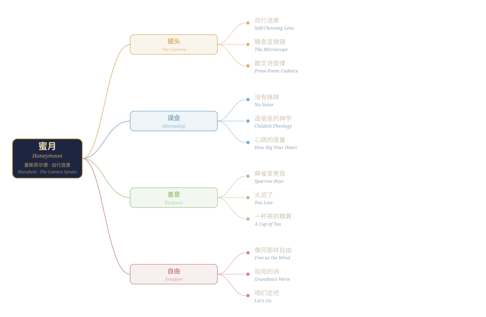

蜜月
〇 · 书籍信息
基本信息
| 书名 | 《蜜月》——人民文学出版社「蜂鸟文丛」版，据 Vintage Classics 1991 年版译出；收 21 篇（1911–1922 年作）＋文洁若译本序（1988 年作家百年诞辰）＋萧乾《我爱〈小妞儿〉》 |
|---|---|
| 作者 | 凯瑟琳·曼斯菲尔德（1888–1923），新西兰出身、伦敦文坛的短篇圣手；「英语世界的契诃夫」；一生写 88 篇短篇，34 岁客死枫丹白露阿冯村；1923 年徐志摩曾赴巴黎访她未及一见 |
| 译者 | 萧乾、文洁若、萧荔——夫妻与女儿三人合译；文洁若序作于百年诞辰，萧乾附文《我爱〈小妞儿〉》（1987）专门分析《小妞儿》的心跳一幕 |
| 体裁 | 短篇小说集——不铺陈故事，只截取生活的底片：一次理发、一杯茶、一场风、一只麻雀；契诃夫式的「无情节、重瞬息」经她移植进英语小说 |
| 一句话 | 「我是一架照相机——一架自行选景的照相机」：她把人生的虚荣、错过的时机与迟到的善意，全部拍成了几乎不需要情节的底片 |
一 · 核心主题总览
二十一帧底片之下，是四组互相咬合的母题：① 选景（照相机的哲学）
「我是一架照相机——一架自行选景的照相机，而我的选择取决于我对人生的态度。」不铺陈故事，只截取底片——选景角度本身就是人生态度：她为短篇小说开辟的新途径，正是「用镜头代替叙述」。
② 瞬息（感情的显微镜）
《心理》的男女用体面话互相错过，《一杯茶》的富太太在镜子前问「我俊吗？」——她不写坏人，只写「自我感动」的精算过程：把「感情瞬息间的变化」放到显微镜下，是她的看家本领。
③ 童话的反用（善意的有效期）
《郊区童话》里麻雀变男孩喊「想吃点儿啥」，等 B 先生端出食物，「但是已经太迟了。小男孩儿们又变成麻雀」——她把社会援助的经典困境（善意总是晚于需要）写成寓言：怎么叫也听不见了。
④ 自由（风的定义）
《启示》喊出「我自由了，我自由了！我像风那样自由！」，压题《蜜月》则把自由写成一个个「走吧」的动作——自由从来不是一处的静态属性，是动态的总和：不等环境完美，先夺回主动权。
二 · 第一段 镜头与谎言—— 照相机 · 妹妹 · 受罪 ——
照相机宣言
文洁若序引曼斯菲尔德自述：「我是一架照相机——一架自行选景的照相机，而我的选择取决于我对人生的态度。」序并总结她的文学史位置：「她打破了过去的小说简单地叙述故事的传统，为短篇小说创作开辟了新的途径。」「自行选景」四个字是理解全书的钥匙：镜头对准什么，冲洗出来的就是什么人生。
◆ 语言学习 · 技法 · 宣言
| 自行选景 | 照相机的哲学——不铺陈故事，只截取底片：角度即态度 |
|---|---|
| 新的途径 | 文学史的位置——契诃夫式的瞬息美学，经她移植进英语小说 |
没有妹妹
社交圈争相传颂「男爵夫人的妹妹」如何优雅神秘，人人以见过她为荣；终于有人当面问起，男爵夫人尖声答道：「胡扯，我没有妹妹。我的孩子是跟我的裁缝的女儿一道来的。」谣言的诞生、传播与破产全程无恶意——每个人只是添了一点点想象：戳穿的那句话同时戳破了十几个人的体面。
◆ 语言学习 · 讽刺 · 轻喜剧
| 妹妹 | 集体虚构的人物——人人都见过、人人说得出细节：谈资的生产线 |
|---|---|
| 胡扯 | 检验的句式——社交叙事的闭环只需要一句否认就能戳破 |
受罪的资格
《娃娃诞生的那一天》里，丈夫在产房外的走廊里走了一夜，忍受想象、恐惧与白眼；婴儿平安降生后，他疲惫而庄严地宣布：「啊，喔唷！任何人也不能指责我，说我不懂得什么叫作受罪。」「受罪」的荣誉判给了走廊而不是产床：等待者的煎熬无人看见，却在啼哭的一刻被自动清零——你先在走廊里长大成人，然后才成为父亲。
◆ 语言学习 · 父职 · 走廊
| 走廊 | 无人发证章的成人礼——手术室、考场、面试室之外都有一条 |
|---|---|
| 喔唷 | 庄严的喜剧——疲惫到只剩感叹词：父亲的原初体验 |
三 · 第二段 心跳与黑网—— 小妞儿 · 稚气 · 风 ——
小妞儿：心有多大
发烧的小女孩把电视里的「现在我要吃掉你」听岔了，哭问「耶稣干吗要造爸爸呀？」；父亲抱着她讲故事、轻拍安抚，最后她贴着他的胸口说：「好爸爸，你的心多大呀。」全篇的张力建立在孩子的误会逻辑上：白天威严的「爸爸」在她梦里是怪物，深夜却成了心最大的人——不解释和解，只让一只耳朵贴上一次心跳。
◆ 语言学习 · 误会 · 心跳
| 耶稣干吗要造爸爸 | 孩子的神学——误会不是错误，是想象力的运行日志 |
|---|---|
| 你的心多大呀 | 父职的度量——孩子量的不是胸围，是你能装下她的恐惧而不发作的容量 |
稚气却很自然
未婚妻与亨利在花园里轻飘飘地调情，亨利笑言：「人生就是这样的——稚气却很自然。」当晚一封电报送到：他已在别处订婚；贝丽尔独自站在暮色里——「花园里阴影幢幢——它们织出一张黑网，笼罩住农舍、树木、亨利和电报纸」。一支玩笑曲与一封电报的对位：青春的天真不是错，错的是把天真当成了对冲一切风险的保单。
◆ 语言学习 · 轻与重 · 对位
| 稚气却很自然 | 白天的轻快——题目取自柯勒律治仿德国民歌的诗 |
|---|---|
| 黑网 | 夜晚的审判——玩笑的边界要靠书面确认 |
起风了
姐弟二人相依在风声大作的房子里：弟弟病着，姐姐守着他熬过一夜又一夜的风；包济说梦见风把一切都卷走，姐姐把毯子掖紧、把灯芯剪亮。全篇结尾只有一句：「风啊——风。」没有事件，只有风声、灯光与两个人——她把叙事缩到最小，把气氛放到最大：危机时刻，掖毯子与剪灯芯的动作，比一切安慰更像爱。
◆ 语言学习 · 气氛 · 守夜
| 风 | 既是天气又是命运——人物原型三年后死于演习 |
|---|---|
| 剪灯芯 | 守夜的动作——重要的不是风什么时候停，是屋里那盏灯有没有人管 |
四 · 第三段 镜前与门厅—— 太迟 · 失败 · 我俊吗 ——
麻雀的童话
郊区冬日，B 先生喂麻雀，一只麻雀突然变成小男孩，隔着窗户喊「想吃点儿啥，想吃点儿啥！」；等他端出面包牛奶，「但是已经太迟了。小男孩儿们又变成麻雀，抖翅飞去——飞得无影无踪，怎么叫也听不见了」。童话的逻辑被反用：善意迟到了一步——她把社会援助的经典困境写成了寓言。
◆ 语言学习 · 寓言 · 有效期
| 想吃点儿啥 | 需求的直白——孩子的嗓音「比其他孩子的声音更清楚地传入耳里」 |
|---|---|
| 太迟了 | 善意的软肋——等想好形式、批好预算，窗外已无人应答 |
心理：失败的告白
一男一女作家相对而坐，彼此心里翻涌着爱意，嘴上却始终谈着别人的作品；客人告辞后，她在门厅里送上帽子，心里同时响起两句话：「你伤了我的心！你伤了我的心！咱们失败了。」与「你干吗不走！不，别走吧。留下。不——你走吧！」体面的话说尽，真心一字未出口：门厅里那两句自相矛盾的内心呐喊，是所有「体面人」共同的双声带。
◆ 语言学习 · 双声带 · 错过
| 咱们失败了 | 不是败给感情，是败给轮流让对方先开口的默契 |
|---|---|
| 留下／走吧 | 同一秒的两个决定——重要的话要设期限 |
一杯茶
富太太罗斯玛丽捡回一个饥寒交迫的女孩，请她喝茶吃饭，视为一场慷慨的善举；丈夫菲利普却说破天机：「她俊得出奇。」当晚，罗斯玛丽把珍珠首饰塞给女孩、送她出门，然后穿着睡衣对镜自照，轻声问：「菲利普，我俊吗？」慈善的真实动机在一句话里现形：善举原来是一场与美貌的竞争——珍珠是赎金，镜子是法庭。
◆ 语言学习 · 善举 · 精算
| 俊得出奇 | 一句台词掀翻一场慈善——动机的真实账本 |
|---|---|
| 我俊吗 | 问的是丈夫，审判的是自己——行善前先照一照这面镜子 |
五 · 第四段 自由与出发—— 象风 · 钻石 · 走吧 ——
启示：像风那样自由
莫妮卡在一个「狂诞的白色的清晨」突然觉醒，对着镜子感到「一股极为强烈而莫名其妙的激动」，心里叫嚷：「我自由了，我自由了！我像风那样自由！」——随后她抛下婚姻跑到理发店，只为把手放在痛失幼女的乔治肩上，然后登船离开。觉醒写成身体先于思想的动作；但曼斯菲尔德不替读者鼓掌：她让自由以抛下一切为代价。
◆ 语言学习 · 觉醒 · 代价
| 我像风那样自由 | 两种风——把别人吹开的风，与把自己吹开的风 |
|---|---|
| 狂诞的清晨 | 身体先醒——激动泛起、双臂要张：自由的第一个信号是生理的 |
航海：祖母的诗
爷爷带孙女坐火车去航海，车厢里挂着死去的奶奶留下的黑框座右铭：「逝矣！黄金般的一小时，每分钟都是一颗钻石。光阴一去不复返，任何补偿也无济于事！」而老人快活地眨着眼睛，像对铭文做一个鬼脸——逝者的诗判了时间死刑，生者的老人却用一次小小的私奔证明补偿存在：快乐就在今晨这趟火车上。
◆ 语言学习 · 铭文 · 出发
| 每分钟都是一颗钻石 | 墙上抄不来的珍惜——好态度不是抄在墙上，是马上用掉 |
|---|---|
| 鬼脸 | 生者的回答——补偿存在，就在今天早上 |
蜜月：自由自在
新婚的范妮与乔治在地中海度蜜月，每天重复的话是：「想想看，多么奇妙啊。咱们在这里完全不受干扰……咱们可以自由自在。」可旅馆餐厅那位西班牙老歌手每晚准时开嗓；乔治哀号：「趁着那个老怪物还没有再呱呱地叫，咱们走吧。」——两人相视而笑，逃离餐厅，融入夜色。「不受干扰」从未实现，真正的自由是最后那个「走吧」的动作：不等环境完美，先夺回主动权。
◆ 语言学习 · 压题 · 走吧
| 自由自在 | 一处的静态属性？——不，是一个个「走吧」的动态总和 |
|---|---|
| 走吧 | 主动权的动作——趁老怪物还没开口，你们本来就可以走 |
六 · 人物图鉴与成长弧线—— 主角配角 · 一张表看穿 ——
主要人物
曼斯菲尔德（作者之声）——「一架自行选景的照相机」——88 篇短篇的镜头总调度
罗斯玛丽——《一杯茶》的富太太——镜前一句「我俊吗？」问倒所有自我感动
莫妮卡——《启示》的觉醒者——「我像风那样自由」，代价是抛下一切
次要人物（功能位）
| 男爵夫人 | 「我没有妹妹」——一句否认戳破整个社交圈的谈资 |
|---|---|
| 小妞儿（凯基娅） | 发烧的小女孩——「好爸爸，你的心多大呀」 |
| 贝丽尔 | 《稚气却很自然》的未婚妻——黑网笼罩的电报之夜 |
| 包济与姐姐 | 《起风了》的姐弟——风声里把毯子掖紧的人 |
| 范妮与乔治 | 《蜜月》的新婚夫妇——趁老怪物没开口，「咱们走吧」 |
七 · 主题与象征—— 每个道具都在说话 ——
| 照相机 | 自行选景的镜头——角度即态度 |
|---|---|
| 妹妹 | 社交的集体虚构——人人见过、人人说得出 |
| 心跳 | 父职的度量衡——耳朵贴上去才听得见 |
| 黑网 | 暮色的织机——玩笑与电报的对位 |
| 麻雀 | 迟到的善意——变回来就再也叫不答应 |
| 风 | 自由的形态——吹开别人还是吹开自己 |
八 · 写作手法赏析—— 怎么写，就能怎么学 ——
① 无情节结构
不铺陈故事，只截取底片：一次理发、一杯茶、一场风——「感情瞬息间的变化」是唯一的情节。
② 误会的神学
孩子的耳朵听岔一句话，敌意完成了转化——误会不是错误，是想象力的运行日志。
③ 童话反用
麻雀变男孩的故事不走向皆大欢喜，走向「太迟了」——善意的有效期成为主题。
④ 结尾留白
「风啊——风」「我俊吗？」——一句话收梢，全部重量压在标点之后。
九 · 名段欣赏—— 原文精读 · 逐段赏析 ——
十 · 金句摘录—— 12 条 · 中英对照 · 带出处 ——
"我是一架照相机——一架自行选景的照相机，而我的选择取决于我对人生的态度。"—— 译本序引
"胡扯，我没有妹妹。我的孩子是跟我的裁缝的女儿一道来的。"—— 《男爵夫人的妹妹》结尾
"啊，喔唷！任何人也不能指责我，说我不懂得什么叫作受罪。"—— 《娃娃诞生的那一天》结尾
"耶稣干吗要造爸爸呀？"—— 《小妞儿》
"好爸爸，你的心多大呀。"—— 《小妞儿》
"人生就是这样的——稚气却很自然。"—— 《稚气却很自然》
"花园里阴影幢幢——它们织出一张黑网，笼罩住农舍、树木、亨利和电报纸。"—— 《稚气却很自然》结尾
"风啊——风。"—— 《起风了》结尾
"但是已经太迟了。小男孩儿们又变成麻雀，抖翅飞去——飞得无影无踪，怎么叫也听不见了。"—— 《郊区童话》结尾
"你伤了我的心！你伤了我的心！咱们失败了。"—— 《心理》
"我自由了，我自由了！我像风那样自由！"—— 《启示》
"趁着那个老怪物还没有再呱呱地叫，咱们走吧。"—— 《蜜月》结尾
十一 · 拓展阅读—— 原文 · 词条 · 译文 ——
原文与文本
- Katherine Mansfield — Wikipedia —— 新西兰、伦敦、格济耶夫的晚年与 1923 年枫丹白露的结局
- Xiao Qian — Wikipedia —— 译者萧乾的文学翻译生涯及其对曼斯菲尔德的偏爱
主题与延伸
- Anton Chekhov — Wikipedia —— 「英语世界的契诃夫」——契诃夫短篇美学与她的承传
- Bliss (short story collection) — Wikipedia —— 本册篇目原刊脉络：1911–1922 年发表史与《园会》等姊妹集
十二 · 个人感悟与心得—— 三点心得 ——
镜头 · 麻雀 · 风
① 镜头对准什么，人生就冲洗出什么
「自行选景」的哲学——人人都在拍照，差别只在选景：今天你的注意力镜头对准了焦虑的头条还是窗外的光，冲洗出来的就是什么。
② 善意的有效期比善意重要
《郊区童话》的寓言——等想好了形式、批好了预算，窗外的小男孩多半已变回麻雀：把帮助做成常态化的、不设门槛的，而不是需要排期的。
③ 自由是「走吧」的总和
《蜜月》的定义——「自由自在」从来不是一处的静态属性：等不来没有干扰的环境，就练出走开的能力——趁老怪物还没开口，你们本来就可以走。
—— 曼斯菲尔德死于 1923 年 1 月 9 日，枫丹白露阿冯村，三十四岁。劳伦斯说她「做得出一手好汤，写得出世界上头一等的散文」；她自己说：我是一架照相机。
十三 · 一页速查（复习用）
| 全书骨架 | 21 篇短篇（1911–1922）＋文洁若译本序＋萧乾《我爱〈小妞儿〉》 |
|---|---|
| 核心命题 | 自行选景的哲学；瞬息的显微镜；善意的有效期；自由的动态定义 |
| 必读篇目 | 《一杯茶》《起风了》《蜜月》（三篇入门）→《小妞儿》《启示》《郊区童话》 |
| 三大符号 | 照相机（选景）· 麻雀（迟到的善意）· 风（自由） |
| 一句话总结 | 曼斯菲尔德用镜头代替叙述——她不写故事，只把生活里那一瞬的光圈调准 |
十四 · 全书思维导图—— 一图纵览 ——

一图纵览全书骨架 · 中英双语对照 · 手机端可左右滑动查看全图